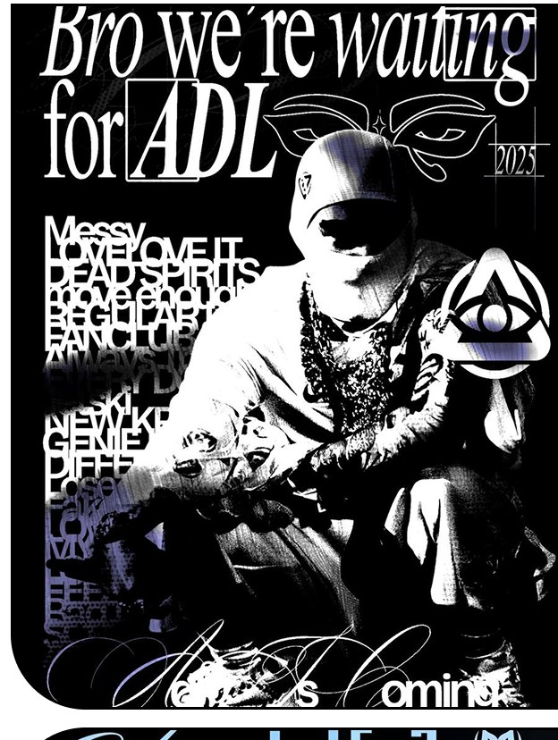
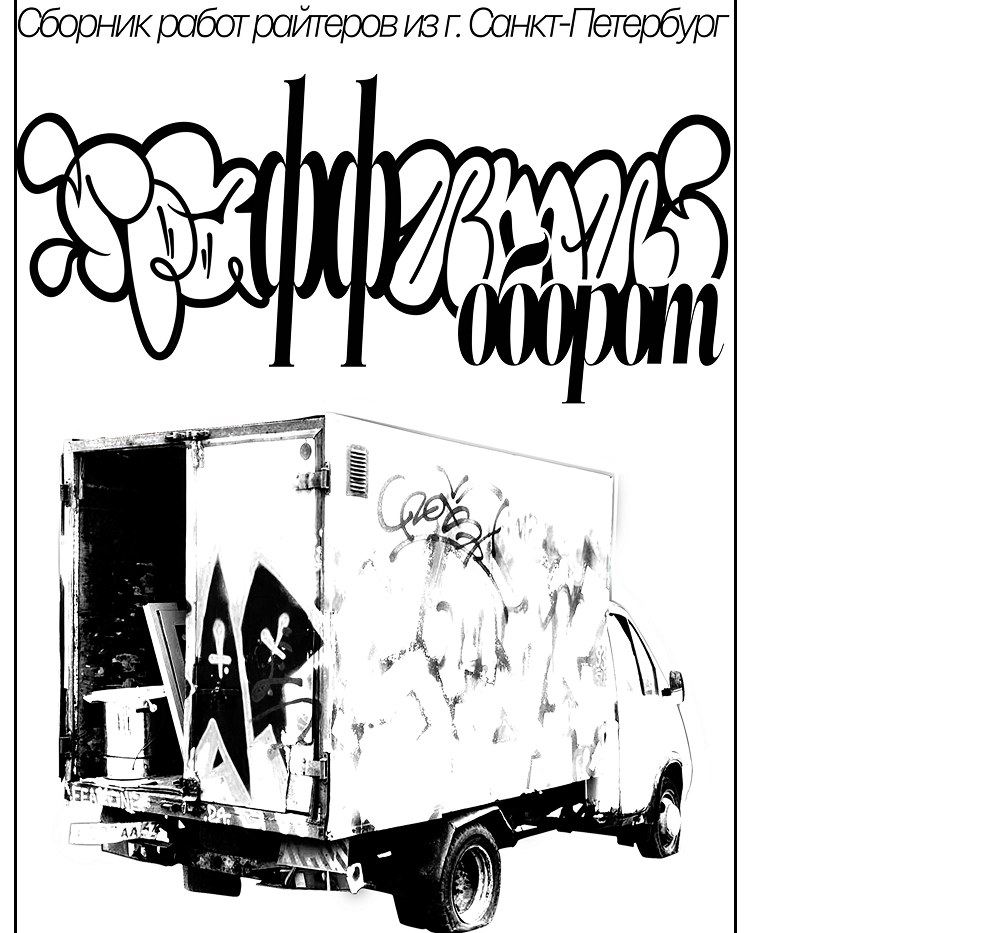

01
Sekret — постеры и леттеринг
Личный почерк на стыке граффити-культуры и графического дизайна — от ч/б постеров до росписи фургона петербургских райтеров.
Смотреть кейс ↗SPB
01 / 07Active case
Graphic / Lettering — 2023—2025
Собрал авторский визуальный язык, который одинаково держится на постере, обложке трека и кузове реального фургона.
Открыть кейс ↗Open for projects
(01)
Личный почерк на стыке граффити-культуры и графического дизайна — от ч/б постеров до росписи фургона петербургских райтеров.
Смотреть кейс ↗
Challenge
Сделать вымышленное устройство убедительным — чтобы зритель поверил в материал, вес и механику продукта.
Смотреть кейс ↗AChallenge
Рассказать о сервисе безопасности без давления и тревожности — и ясно показать, что он умеет.
BResponse
Модульная сетка, крупная типографика и мягкая палитра; карта маршрутов, SOS и комьюнити-чаты — три опорных блока.
CValue
Оффер, функции и тарифы считываются последовательно, а визуальный тон поддерживает доверие к продукту.

Перевёл технически сложную услугу в последовательную визуальную историю: пользователь быстро понимает проблему, процесс и ценность доработки.
Смотреть кейс ↗Ещё 03 проекта под NDA — материалы показываю по запросу.
Все проекты (07) ↓(02)
(03)
Знаки, леттеринг и фирменные системы, которые узнаются с одного взгляда и одинаково держатся на визитке, упаковке и фасаде.
Illustrator / Figma
Кампании и баннеры с жёсткой иерархией: оффер считывается первым, бренд — сразу за ним. Адаптация под любые площадки и пропорции.
Photoshop / After Effects
Модульные шаблоны для маркетплейсов: единая сетка и шрифтовая иерархия, которые масштабируются на весь каталог.
Photoshop / Figma
От структуры и прототипа до живой страницы: ясный сценарий, крупная типографика и аккуратный адаптив.
Figma / HTML / CSS / JS
Предметные рендеры, материалы и свет; генеративные эксперименты для постеров и motion.
Blender / TouchDesigner
Посты, сторис и питч-деки, которые держат фирменный стиль и не скатываются в шаблон.
Illustrator / Premiere Pro
(04)

Poster ⇄ alt
 3D ⇄ alt
3D ⇄ alt

Street
 Depth ⇄ alt
Interface
3D
Depth ⇄ alt
Interface
3D
(05)
About / Approach
Привет, я Ильяс — графический и digital-дизайнер из Санкт-Петербурга. Работаю на стыке брендинга, графики и 3D: от знака и леттеринга до рекламных визуалов, лендингов и предметных рендеров.
Больше 4 лет в дизайне, высшее образование по направлению «Прикладная информатика в дизайне». Моя задача — чтобы результат на 100% устраивал заказчика: правки не ограничены, каждая работа доводится до конца.
(06)